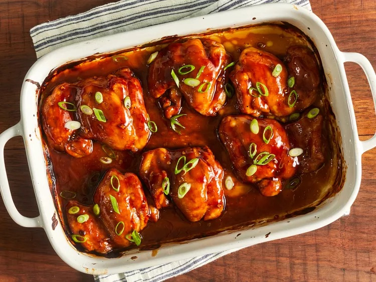

Teriyaki Chicken

Description
A dish of cooked rice stir-fried with chicken, vegetables, eggs, and seasonings.
Ingredients
- Sugar
- Vinegar
- Cornstarch
- Water
- Garlic
- Ginger
- Chicken meat
- Soy sauce
- Black pepper
Steps
- Preheat the oven to 425 degrees F.
- Lightly grease a 9x13-inch baking dish.
- Combine sugar, soy sauce, cider vinegar, cornstarch, cold water,
garlic, ginger, and pepper in a small saucepan over low heat.
- Simmer, stirring frequently, until teriyaki sauce thickens and bubbles, 3 to 5 minutes.
- Remove from the heat.
- Place chicken thighs in the prepared baking dish.
- Brush both sides of each thigh with the sauce.
- Reserve any extra sauce for basting.
- Bake in the preheated oven for 30 minutes.
- Flip chicken and brush with sauce.
- Continue to bake, basting with remaining sauce every 10 minutes, until no longer
pink and juices run clear, 20 to 30 more minutes.